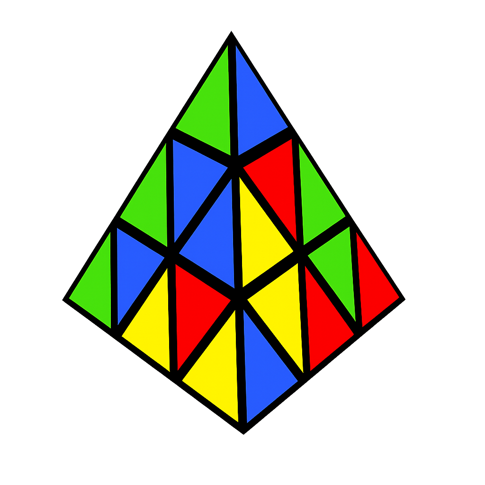
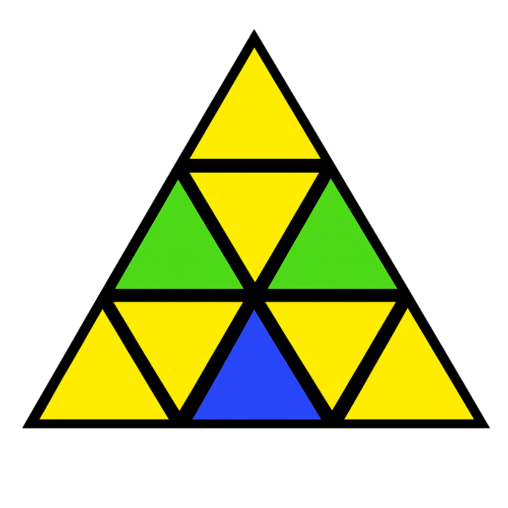
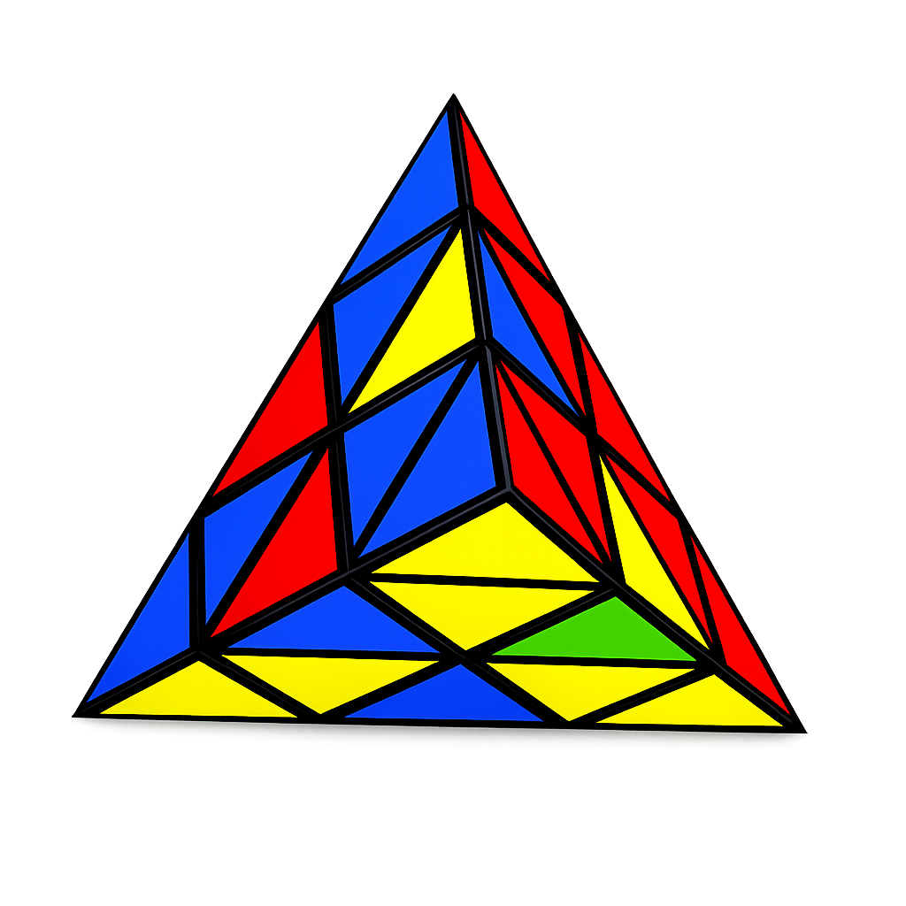
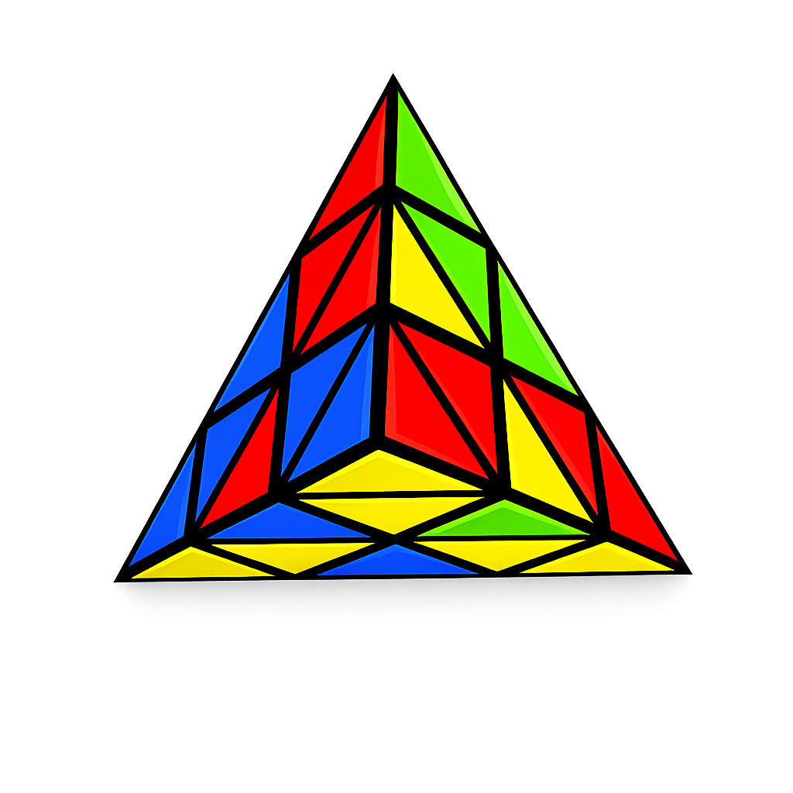

Step 1 — Corners
- Turn the Tips
The 4 small corner tips don't affect any other pieces on the puzzle.
Simply twist each of the 4 tips until their colors match the piece directly underneath them.

Step 2 — Yellow Side
- Solve the Center Pieces (First Layer Centers)
- Insert the Bottom Edges (Solve the Yellow Base)
- If the Yellow sticker is on the Right
- If the Yellow sticker is on the Left

Look at the 3 main face centers (the pieces directly under the tips) on a side.
Rotate the main corners until all 3 Yellow centers are on the same face.
Tip: Look at the tip that doesn't have yellow on it—the face opposite that tip is your Yellow face!
Hold the puzzle so the completed Yellow face is on the bottom. Look at the 3 edge slots on the bottom layer.
Find a Yellow edge piece on the top layer.

Do the Right-hand side move

Do the Left-hand side move
Repeat this for all 3 bottom edges until the entire Yellow layer and its matching side-strips are complete.
Step 3 — Blue Side
- Forget and Move On
- Pick a new color (like Blue)
- Treat Blue as your new bottom face
- Repeat the exact same steps to solve the Blue face
Once the first face (Yellow) is solved, completely ignore that Yellow was solved.
Step 4 — Remaining Sides (If Needed)
Once you finish your second face (e.g., Blue) and the Pyraminx still isn't solved:
- Pick the Next Unsolved Face
- Treat it as your new bottom
- Repeat the exact same steps
Look around the puzzle and pick a third color (e.g., Red or Green).
Hold that face on the bottom and forget about Blue and Yellow.
Best Case: The puzzle solves on the 2nd face (50% of the time).
Average Case: The puzzle solves after doing a 3rd face.
Worst Case: You might need to cycle through a 4th face, but it will always solve automatically without you ever needing to learn a single last-layer algorithm!